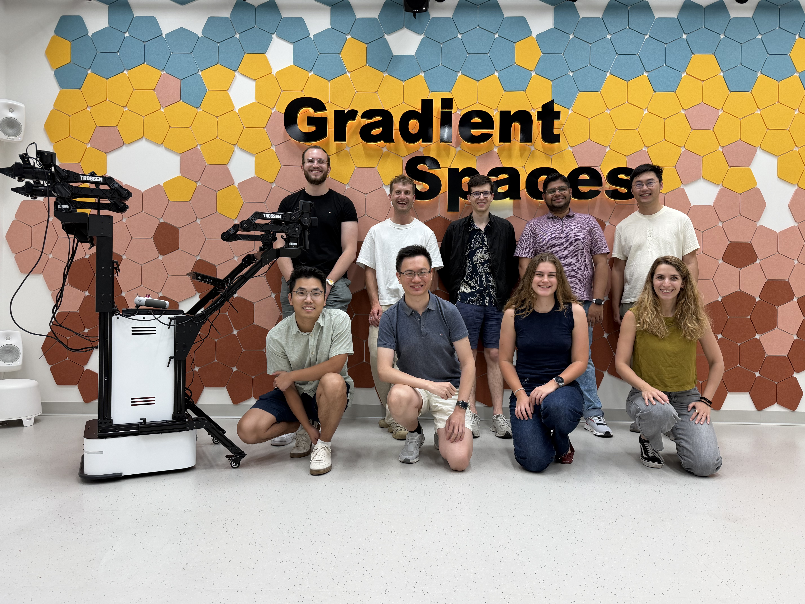

Four papers accepted to NeurIPS 2026
World from Motion, CoPE-VideoLM, StreetNVS, and GraphWrit3R were accepted to NeurIPS 2026.
Stanford Civil & Environmental Engineering
We study how real-world visual data can help design, construct, and understand adaptive spaces that move between the physical and digital world.


About
Gradient Spaces develops quantitative methods for environments that blend the physical and the digital. The lab works across different visual data, developing methods and frameworks that are capable of designing, reconstructing, and predicting our spaces and interactions within them in this blend.
Our research spans dynamic 3D and 4D scene understanding, in-the-wild reconstruction, mixed reality, and sustainable built environments — with open datasets, code, and benchmarks released alongside our publications.
News
World from Motion, CoPE-VideoLM, StreetNVS, and GraphWrit3R were accepted to NeurIPS 2026.
Tao Sun has been selected as a Robotics Scholar in the inaugural cohort of the Stanford Robotics Center.
Register Any Point, with authors among others Tao Sun, Liyuan Zhu and Iro Armeni, was recognized as a best paper award candidate.
ReScene4D, WildPose, and GaussFusion were accepted to CVPR 2026.
Research
Connect